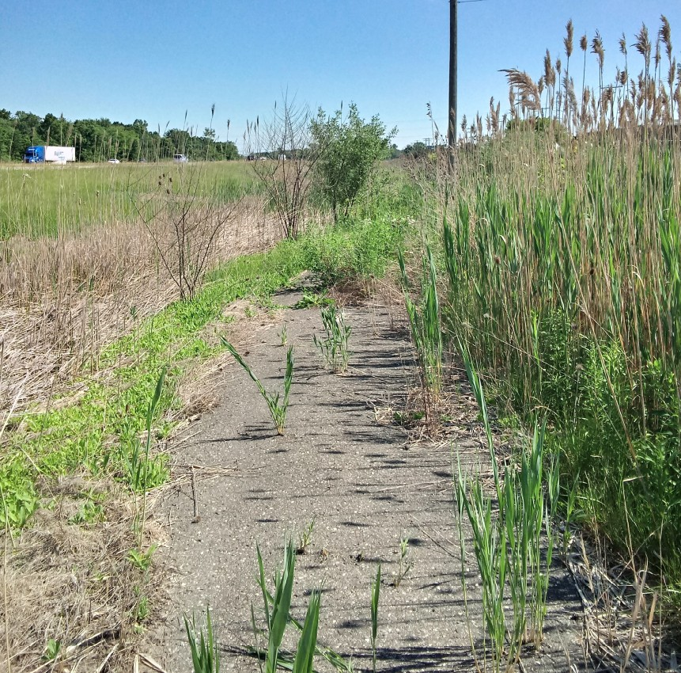

The Journey To The Old End Of The I-275 Bicycle Trail
Every one in a while I bicycle to the south end,
and check if they did any work, and how it went.
I always find it old, and full, of bumps thorns and grass,
no matter how hard I bicycle, there is never a way to pass.
I work up this morning, and said "It is time for another check!",
I got my gear together, and squirted sunblock all around on my neck.
And as soon as got too far to go back,
my bicycle, creaked, and shuddered, and squeaked - and I was like "What the heck?"
The noise came from the bottom where the pedals are,
and only the left pedal made noise thus far.
And the noise would not cease,
I had the tools but no grease.
So I said to my self in a deep tone "It is time for Field Repair!,
and although I have no grease, I will not despair.""
First, I checked the pockets of my new red pants, the short ones that I like,
but there was nothing there that could fix my bike.
So I looked to my day pack, and the solution sat right next to my bicycle lock,
I squeaked! "I do have grease, it is in my sun block!"
So I squired some on the pedals and the connecting rod,
and though I admit the solution was a bit odd...
I was back on the road, riding smoothly and quietly like a pro,
after all, I had places to go.
I made it to the southern edge, it was 15 miles away,
they still didn't fix anything, bumps and shrubs were blocking the way.
I took a photo to share with you,
just in case you were thinking about going or pushing through.

The actual ancient end of the trail is not that far away,
about 2.6 miles south, but you are better off walking the rest of the way.
Even better than following the ancient end, is to go to the park,
and head for lake Erie, but make sure to leave early, so that you don't bicycle back after dark.
The trick to make it to the lake is to turn right before the Nature Center,
and head through Flat Rock, to Maple Beach, you don't have to pay to enter.
I think of it as the real end to the trail,
reaching it always make for a good tale.